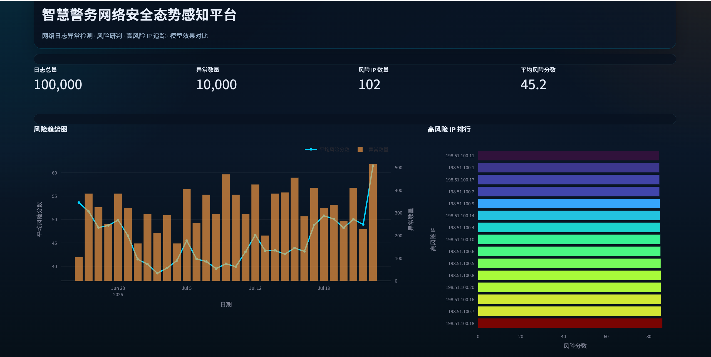
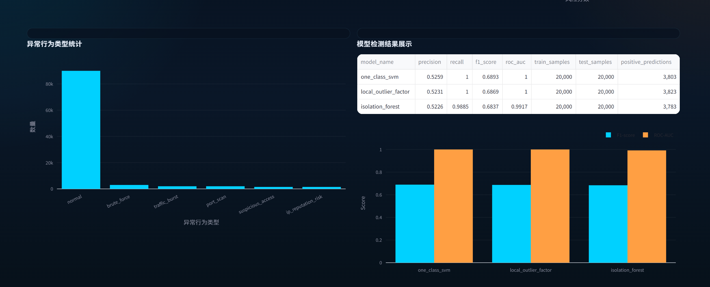
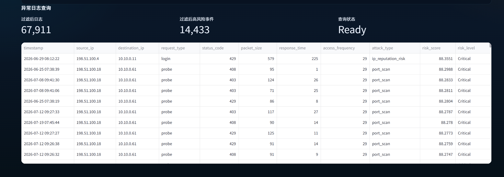

智慧警务网络安全态势感知与异常行为检测系统
本项目围绕智慧警务场景中的网络安全日志分析需求，构建了一套从数据生成、数据清洗、特征工程、异常行为检测、风险评分到可视化展示的完整分析流程。项目当前使用模拟网络安全日志进行实验验证，不声称已部署于真实公安业务系统。
日志规模
100,000
最佳模型
One-Class SVM
F1 Score
0.6893
项目概述
项目面向智慧警务网络安全态势感知场景，完成日志分析、异常识别和风险辅助研判，形成从数据到决策支持的闭环流程。
数据说明
| 内容 | 说明 |
|---|---|
| 数据性质 | 模拟网络安全日志 |
| 日志规模 | 100,000 条 |
| 特征维度 | 42 个 |
| 分析方式 | 离线批处理 |
| 输出结果 | 异常事件、风险 IP、风险等级 |
数据处理流程
- 模拟日志生成
- 缺失值与异常值处理
- 字段标准化
- 网络安全特征构建
- 模型训练与比较
- 事件和 IP 风险评分
网络安全特征工程
围绕攻击行为识别构建了访问频率、失败率、近期访问行为、流量变化、突发访问、端口扫描压力和信誉风险等特征，为异常检测与风险评分提供统一输入。
异常检测模型比较
- Isolation Forest
- Local Outlier Factor
- One-Class SVM
项目根据当前模拟数据实验指标对模型进行了比较，并按照 F1 Score 选择 One-Class SVM 作为当前最佳模型。
模型实验结果
以下指标来自当前模拟数据实验结果，不代表真实生产环境效果。
| 指标 | 数值 |
|---|---|
| Precision | 0.5259 |
| Recall | 1.0000 |
| F1 Score | 0.6893 |
| ROC-AUC | 0.999995 |
风险研判机制
系统综合模型异常结果、访问频率、失败率、端口扫描压力、突发行为和 IP 信誉因素，输出 risk_score，并映射为 Low、Medium、High、Critical 四级风险标签。
Dashboard 功能
- 总体安全指标
- 风险趋势图
- 高风险 IP 排行
- 模型效果对比
- 异常事件查询
- 风险等级筛选
项目结论
项目完成了从数据到风险展示的完整工程链路，并验证了多模型异常检测与风险评分组合方法在当前模拟日志实验中的可行性。
项目局限性
- 当前使用模拟数据。
- 与真实警务网络环境存在差异。
- 当前以离线批处理为主。
- 尚未接入实时流式日志。
- 模型解释能力仍可继续优化。
图片展示区域
系统总体态势页面

异常检测模型对比

风险分析与异常事件查询
